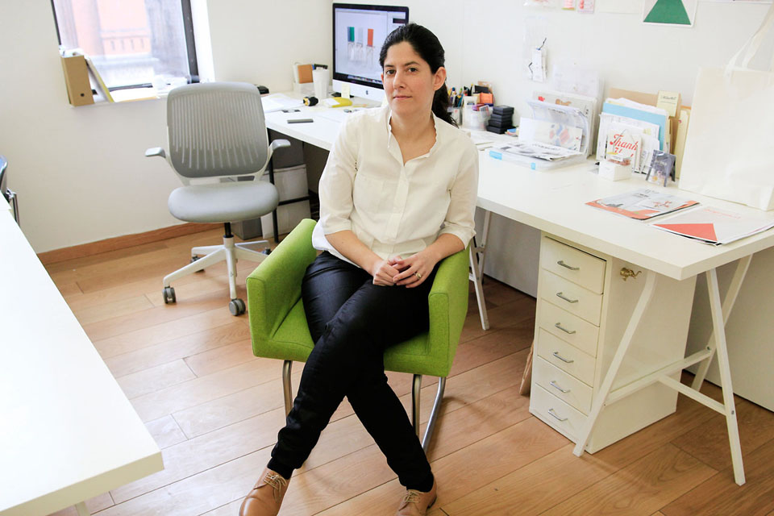
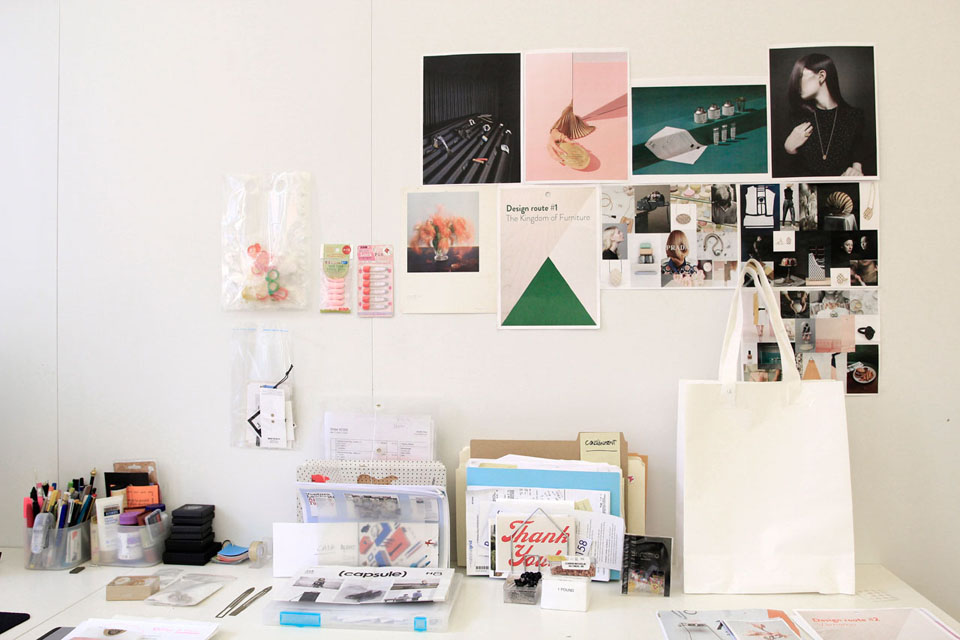
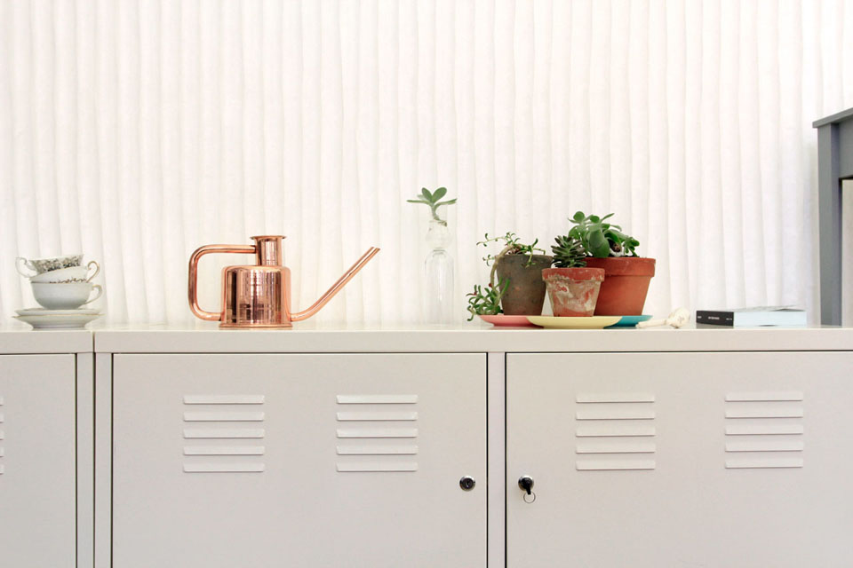
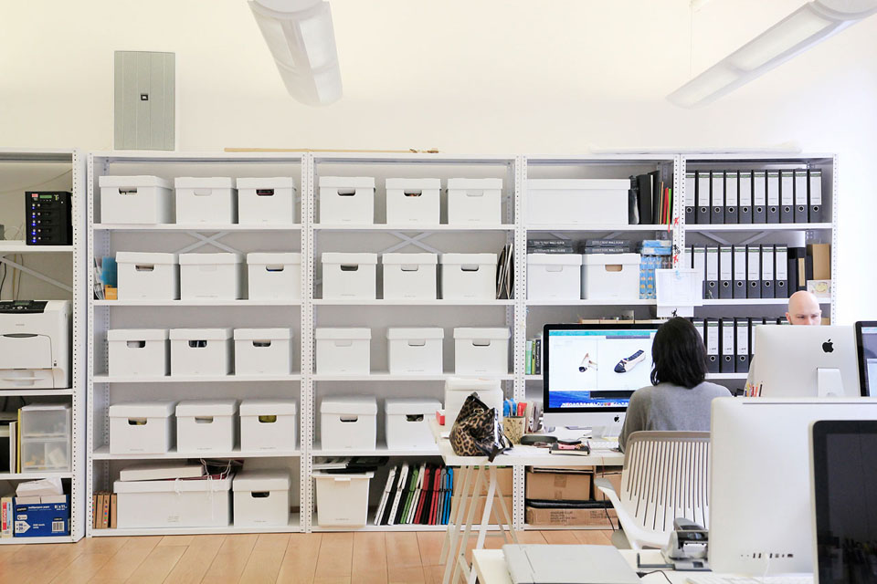
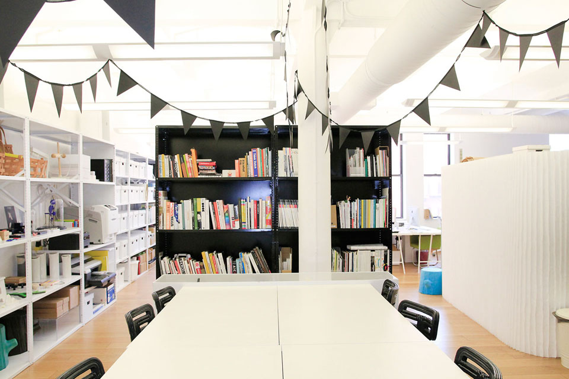

Between Aesthetics and Functional
Between aesthetics and functional, thought-provoking, as much about whimsy as practicality, the New York-based design studio, byAMT, creates jewelry, home goods, and furniture that tweak expectations and invite delight.
Alissia Melka-Teichroew, founder and creative director of byAMT Inc is a New World-Old World mash-up. She spent her undergraduate years at Design Academy Eindhoven (NL) and holds a Masters of Industrial Design from the Rhode Island School of Design (USA). Alissia has been developing her own designs since graduating from Eindhoven, but along the way has worked at design consultancy IDEO and at Puma International.

Quintessential byAMT products an acrylic version of the classic wedding ring; the Peasant Collection, contemporary furniture made of rustic wood; and Jointed Jewels, elegant ball-jointed necklaces, bracelets, and rings created on a 3-D printing machine, layer by layer. These objects share the same quirky sensibility: a twist on an iconic form or a surprising use of a material. A byAMT object demands a reaction, whether a chuckle or a serious debate.



